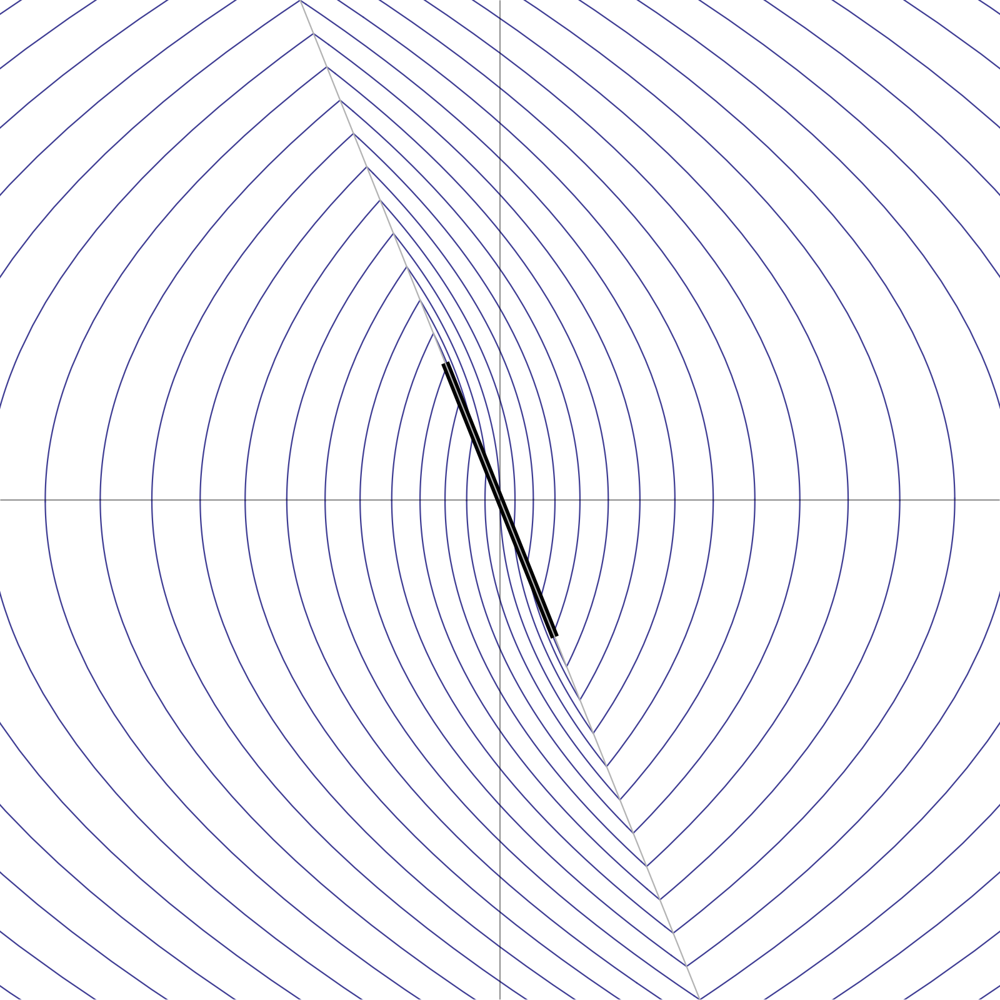

It is apparent that to achieve stable levitation, a new idea is needed. Note that until now we only used information about the position of the particle. Why not use information about its velocity (the $y$ coordinate of the system's state $(x,\dot{x})$ when represented as a planar system) as well? Intuitively, this should help, since it's clear that the reason for oscillations developing in the previous scheme is that we are allowing the particle to overshoot the equilibrium point from either direction before toggling the state of the electromagnet; by looking at the velocity we could predict where the particle will be in a short time and do the toggling in advance in a way that will gradually reduce the size of the oscillations.
Formally, the idea described above leads to a feedback rule of the type
where $b>0$ is a small numerical constant. This leads to the modified system
To draw the phase portrait for the modified system, again one has to combine the curves from the simple gravity system (44) with their mirror images, but the choice of which one to draw at a given point goes according to which side of the line $x+by=0$ the point is on. Finding the intersection points of the parabolas $x=a-\tfrac12 y^2$ and $x=a+\tfrac12y^2$ with the line $x+by=0$ leads to quadratic equations which are easily solved, so the phase portrait can be plotted fairly easily. The result is shown in Figure 16.

A look at the phase portrait suggests that the idea is successful, and indeed results in stable levitation. It is not difficult to confirm this analytically. One interesting behavior that emerges upon closer examination of the properties of this system is that when $(x,y)$ crosses the switching line $x+by=0$, if the point is close enough to the origin then the equation of motion becomes ill-defined, since the vector field $(y,-\operatorname{sgn}(x+by))$ starts pointing back towards the switching line. In practice, due to time-delay effects in any physical implementation of the system, the particle will undergo a "sliding motion" in which it oscillates violently around both sides of the switching motion, all the while still sliding towards the origin. This phenomenon has been referred to as chattering, since in physical implementations where the binary switching is done using an electrical relay, the high frequency switching makes a chattering noise. We can estimate the rate at which the particle will approach the origin during the sliding motion stage: since the sliding motion happens very near the line $x+by=0$ and we have the equation $\dot{x}=y$, the particle's position will approximately satisfy the ODE $\dot{x}=-x/b$, whose solution is given by
That is, the convergence to the origin in the final sliding stage is exponential, with a time constant of $1/b$.
Show that the sliding motion for points along the line $x+by=0$ happens precisely for $|x|\le b^2$.
If we start the system at a point $(x_0,y_0)$ that lies on the switching line $x+by=0$, find a formula for the time it takes the point to flow into the sliding motion area connecting the points $(-b^2,b)$ and $(b^2,-b)$.)